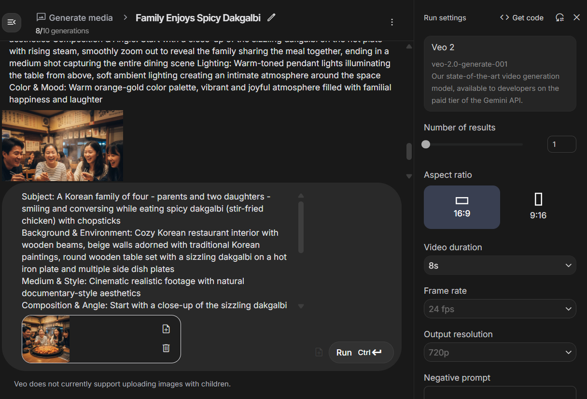
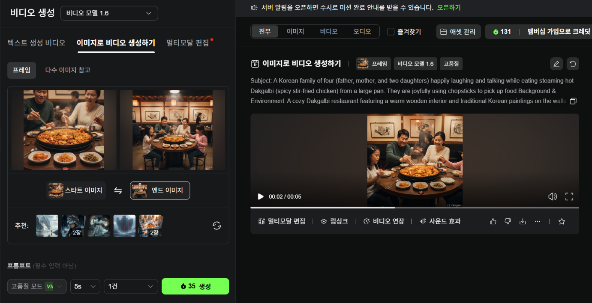

📝 프롬프트 작성 순서
🌟 나노바나나에서 얻은 이미지를 첨부하고 비디오 생성 가이드에 맞춰 다음 AI 도구에서 더 나은 프롬프트를 얻습니다.
- VEO: 이미지 한 장만 사용하여 영상 생성
- Kling AI: 첫 이미지와 마지막 이미지를 모두 넣어야 영상 생성 가능
📋 프롬프트 가이드
| 구분 | 내용 |
|---|---|
| 프롬프트 형식 | 주체, 배경 및 환경, 매체 및 스타일, 구도 및 앵글, 조명, 색상 및 분위기 |
| 주체 | 식당에서 음식을 맛있게 먹고 있는 한국인 가족 4명 |
| 배경 및 환경 | 첨부한 사진의 식당 배경과 음식을 맛있게 먹고 있는 모습 |
| 매체 및 스타일 | 사실적인 동영상(실사 스타일) |
| 구도 및 앵글 | 음식을 보여주다가 줌아웃해서 음식을 맛있게 먹고 있는 모습으로 전환 |
| 조명 | 첨부한 사진의 식당 조명 |
| 색상 및 분위기 | 밝고 활기찬 분위기 |
✍️ 프롬프트 작성 예시 (Chat GPT, Gemini, Claude)
🎯 프롬프트 결과
🇰🇷 한글 프롬프트
주체: 닭갈비를 중심으로 식당에서 즐겁게 식사하는 한국인 가족 4명(부모와 두 자녀)
배경 및 환경: 전통적인 한식 식당 내부, 따뜻한 조명 아래에서 김이 피어오르는 닭갈비와 다양한 반찬이 놓인 원형 식탁, 나무 인테리어와 한옥 느낌의 벽장식이 있는 공간
매체 및 스타일: 사실적인 실사풍 동영상, 자연스러운 인물 움직임과 음식의 질감이 강조된 고해상도 영상
구도 및 앵글: 음식 위로 김이 피어오르는 근접샷으로 시작 → 서서히 줌아웃하며 가족이 함께 웃으며 식사하는 장면으로 전환 → 부모와 아이들이 젓가락으로 음식을 나누는 클로즈업
조명: 따뜻한 톤의 식당 조명, 부드럽게 인물을 감싸는 실내 확산광
색상 및 분위기: 따뜻하고 아늑한 색감, 가족의 웃음과 함께하는 행복하고 활기찬 분위기
🇺🇸 English Prompt
Subject: A Korean family of four (parents and two children) happily enjoying dak-galbi together at a restaurant
Background and Environment: Traditional Korean restaurant interior with warm lighting, a round table filled with steaming dak-galbi and side dishes, wooden decor and Korean-style wall art
Medium and Style: Realistic live-action video, high-resolution cinematic quality emphasizing natural expressions and the texture of the food
Composition and Angle: Starts with a close-up of the steaming dak-galbi → smoothly zooms out to show the family laughing and sharing food → includes close-up shots of chopsticks serving and family interaction
Lighting: Warm and soft indoor lighting that gently highlights the family and the food
Color and Mood: Cozy, warm tones with a cheerful, heartwarming family atmosphere
🇰🇷 한글 프롬프트
주제: 한국인 가족 4명(아버지, 어머니, 두 딸)이 큰 팬에서 갓 나온 뜨거운 닭갈비를 먹으며 즐겁게 웃고 이야기하는 모습. 가족들은 젓가락으로 음식을 집어 먹으며 즐거워하고 있다.
배경 및 환경: 따뜻한 목재 인테리어와 벽에 걸린 전통 한국화가 특징인 아늑한 닭갈비 전문점. 부드럽게 흐릿하게 처리된 배경에 다른 손님들이 보이면서 자연스러운 분위기를 연출한다.
매체 및 스타일: 사실적인 영상. 얕은 심도(shallow depth of field)를 활용해 가족에게 초점을 맞춥니다.
구도 및 앵글: 지글지글 끓으며 김이 오르는 닭갈비의 클로즈업 샷으로 시작합니다. 서서히 후퇴(돌리 아웃)하며 가족 구성원들의 웃는 얼굴을 드러내고, 최종적으로 전체 그룹의 미디엄 샷으로 정착합니다. 테이블 주위를 부드럽게 회전하는 아크 샷을 추가해 역동적이고 생동감 있는 느낌을 줍니다.
조명: 테이블 바로 위에 매달린 오렌지 톤 펜던트 램프에서 나오는 따뜻하고 부드러운 조명으로, 친밀하고 아늑한 분위기를 연출하면서 음식의 증기와 질감을 강조합니다.
색상 및 분위기: 갈색, 빨간색, 오렌지색이 주를 이루는 따뜻한 색감으로, 식욕을 돋우고 따뜻하며 생동감 넘치는 분위기를 조성합니다.
🇺🇸 English Prompt
Subject: A Korean family of four (father, mother, and two daughters) happily laughing and talking while eating steaming hot Dakgalbi (spicy stir-fried chicken) from a large pan. They are joyfully using chopsticks to pick up food.
Background & Environment: A cozy Dakgalbi restaurant featuring a warm wooden interior and traditional Korean paintings on the walls. Other diners are visible in the softly blurred background, creating a natural ambiance.
Medium & Style: realistic video. Utilizes a shallow depth of field to keep the focus primarily on the family.
Composition & Angle: Begins with a close-up shot of the sizzling Dakgalbi with steam rising. Slowly pulls back (dolly out) to reveal the smiling faces of the family members, finally settling on a medium shot of the entire group. A gentle arc shot moving around the table is added to give a dynamic and lively feel.
Lighting: Warm, soft lighting from orange-toned pendant lamps hanging directly above the table, creating an intimate and cozy atmosphere while highlighting the steam and texture of the food.
Color & Mood: A warm color palette dominated by browns, reds, and oranges, creating an appetizing, heartwarming, and vibrant atmosphere.
🇰🇷 개선된 프롬프트 (한글)
주체: 부모와 두 딸로 구성된 4인 가족이 젓가락으로 매콤한 닭갈비를 떠먹으며 밝게 웃고 대화하는 모습
배경 및 환경: 전통 한국 벽화가 걸린 목재 기둥과 베이지색 벽이 있는 아늑한 한식당 내부, 원형 나무 테이블에 철판 위 치즈 닭갈비와 여러 반찬 접시들이 놓여있음
매체 및 스타일: 시네마틱한 질감의 실사 영상, 자연스러운 다큐멘터리 스타일
구도 및 앵글: 철판 위에서 지글지글 끓고 있는 닭갈비의 클로즈업으로 시작하여 김이 모락모락 피어오르는 모습을 보여주고, 부드럽게 줌아웃하면서 음식을 나눠먹는 가족 전체의 모습으로 전환, 미디엄 샷으로 마무리
조명: 따뜻한 색온도의 펜던트 조명이 테이블 위를 비추고, 주변은 부드러운 앰비언트 조명으로 아늑한 분위기 연출
색상 및 분위기: 오렌지-골드 톤의 따뜻한 색감, 가족의 웃음소리가 들릴 것 같은 활기차고 행복한 분위기
🇺🇸 Improved Prompt (English)
Subject: A Korean family of four - parents and two daughters - smiling and conversing while eating spicy dakgalbi (stir-fried chicken) with chopsticks
Background & Environment: Cozy Korean restaurant interior with wooden beams, beige walls adorned with traditional Korean paintings, round wooden table set with a sizzling dakgalbi on a hot iron plate and multiple side dish plates
Medium & Style: Cinematic realistic footage with natural documentary-style aesthetics
Composition & Angle: Start with a close-up of the sizzling dakgalbi on the hot plate with rising steam, smoothly zoom out to reveal the family sharing the meal together, ending in a medium shot capturing the entire dining scene
Lighting: Warm-toned pendant lights illuminating the table from above, soft ambient lighting creating an intimate atmosphere around the space
Color & Mood: Warm orange-gold color palette, vibrant and joyful atmosphere filled with familial happiness and laughter
🎥 VEO 사용법
- 이미지 한 장과 프롬프트를 넣으면 생성이 가능합니다
- 오른쪽 메뉴에서 화면 비율과 영상의 길이를 조절할 수 있습니다
📷 VEO 사용법 이미지

🎬 Kling 사용법
- 스타트 이미지와 엔드 이미지를 넣고, 프롬프트를 작성하면 영상 생성이 가능합니다
📷 Kling 사용법 이미지

⚠️ 영상 생성 전 주의사항
- Kling의 경우 생성형 AI 프롬프트로 생성한 영상 프롬프트를 그대로 사용해도 문제없이 생성됩니다
- VEO2의 경우 안전필터가 적용되어 영상생성이 제한될 수 있습니다
- 제한 대상: 유명인, 공인, 아동, 청소년, 브랜드 로고, 저작권 콘텐츠 등을 직접적으로 언급할 경우
- 생성형 AI로 얻은 영상 프롬프트로 영상생성이 되지 않을 경우 생성형 AI를 이용하여 다시 프롬프트를 얻어야 합니다
🔧 영상 프롬프트 수정 방법
- Gemini를 사용하는 것을 추천합니다
✏️ 수정된 영상 프롬프트
🇰🇷 한글 프롬프트
주체: 이 장면은 김이 모락모락 나는 커다란 팬 주위에 네 명의 인물들이 대화하고 활동하며 생동감 넘치는 모임을 갖는 모습을 묘사합니다. 그들은 젓가락을 사용하여 음식을 다루고 있습니다.
배경 및 환경: 따뜻한 색조와 전통 한국 패턴을 연상시키는 장식 요소를 특징으로 하는 양식화된 레스토랑 내부입니다. 배경에는 다른 손님들을 암시하는 흐릿하고 불분명한 형태들이 포함되어, 분주하면서도 예술적인 환경의 느낌을 유지합니다.
매체 및 스타일: 애니메이션 일러스트레이션 스타일, 2D 애니메이션, 생동감 있는 색상, 깔끔한 선. 주된 활동에 초점을 맞추기 위해 얕은 피사계 심도를 활용합니다.
구도 및 앵글: 영상은 김이 양식화되어 피어오르는 커다란 팬의 역동적인 클로즈업 샷으로 시작됩니다. 카메라는 이어서 그룹의 상호작용을 보여주기 위해 부드럽게 줌 아웃(뒤로 물러남)하며, 미디엄 샷에 고정됩니다. 테이블 주변을 매끄럽게 공전하는 카메라 움직임이 시각적인 흥미를 더합니다.
조명: 장식적인 천장 조명에서 나오는 따뜻하고 매력적인 조명이 김과 음식의 양식화된 질감을 강조합니다.
색상 및 분위기: 풍부한 빨간색, 주황색, 갈색과 같은 따뜻한 색조가 지배적인 생동감 있고 매력적인 색상 팔레트입니다. 분위기는 에너지 넘치고 조화롭습니다.
🇺🇸 English Prompt
Subject: This scene depicts a lively gathering of four individuals engaging in conversation and activity around a large, steaming pan. They are using chopsticks to handle food.
Background & Environment: A stylized restaurant interior with warm tones, featuring decorative elements reminiscent of traditional Korean patterns. The background includes blurred, indistinct shapes suggesting other patrons, maintaining a sense of a busy but artistic environment.
Medium & Style: Animated illustration style, 2D animation, vibrant colors, clean lines. Utilizes a shallow depth of field to focus on the main activity.
Composition & Angle: The video opens with a dynamic close-up of the large pan, with stylized steam rising. The camera then gently zooms out (pulls back) to show the group's interaction, settling on a medium shot. A smooth, orbiting camera movement around the table adds visual interest.
Lighting: Warm and inviting illumination from decorative overhead lights, highlighting the steam and stylized textures of the food.
Color & Mood: A vibrant and appealing color palette with dominant warm hues like rich reds, oranges, and browns. The mood is energetic and harmonious.
🎞️ VEO 영상 결과물
📹 VEO 영상 결과물
🎞️ Kling 영상 결과물
📹 Kling 영상 결과물
⚡ 간단한 프롬프트로 영상 생성
📝 영상 생성 프롬프트 #1
🎬 결과물
📹 VEO 영상 결과물
📝 영상 생성 프롬프트 #2
🎬 결과물
📹 VEO 영상 결과물
🎉 영상 생성 완료!
이 가이드를 따라 멋진 식당 영상을 만들어보세요. 창의적인 프롬프트와 적절한 도구 선택이 성공의 열쇠입니다!